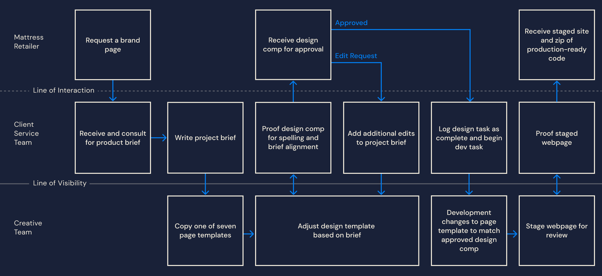

Tempur-Pedic
Brand page catalog for mattress retailers
Challenge
Mattress retailers have widely varying technical experience
A majority of Tempur-Pedic’s mattress sales come from their expansive retailer network. My previous employer, Icon Marketing Communications, is the go-to agency for any Tempur-Pedic co-branded print and digital marketing materials. While many large furniture retailers have internal marketing teams, small- and mid-sized retailers are unable to create co-branded content for their websites. When I joined Icon, the agency service of delivering brand webpages to clients ended with handing off PDFs and Photoshop files of design comps. This left retailers three options to implement the pages onto their website: figure out how to build the page, hire additional contractors for development, or abandon the project.
When I was joined to Icon and observed this issue, I saw the opportunity to create a new webpage development service at Icon. This service would solve three pain points: ease webpage implementation for retailers, ensure Tempur-Pedic brand standards in page development, and bring a new revenue-generating service to Icon.
Solution
Landing page design system for mattress retailers
To solve these pain points, I first spoke with members of Icon’s Client Service Team to best understand the existing brand page process. I worked with the Creative Team to design and develop seven brand page designs of varying complexity, both in code and content, to meet the needs of varying retailers. These pages were designed as an overview of all Tempur-Pedic products offered by the retailer, as well as to serve as a landing page for banner ads, e-blasts, and other digital marketing efforts from the retailer.
Process Workflow
Select Page Designs
Results
What do over 1,000 mattress retail websites have in common?
Not a whole lot. The biggest challenge in this project was to write front-end code that could be implemented into just about any front-end framework or content management system. My solution to ‘normalize’ every site was to wrap all of the HTML and CSS code within a dedicated “tempur-pedic-wrapper” class. I used Eric Meyer’s reset.css for all content within the class, and styled the rest of the site using a modified version of the SCSS structure in this article. To view the code in detail, visit my GitHub page.
Responsibility
Art direction, service design, visual design, and front-end development
Additional Credits
Allison Wilker, Client Services
Jeff Nabors, Creative Director
Eric Thompson, Creative Director
Keane Anderson, Digital Designer